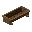

Feeding troughsFeeding troughs
Planks and an iron ingot make a small trough:
Two small troughs make a trough; add one more for a long one. Each block holds 16 of one food.
Filling a trough
Right-click with food to tip in a handful, or open it empty-handed to fill it and scoop some back. Animals come and eat what they would take from your hand:
Fattening
Every trough meal adds a point; a day without one takes one away.
Lean ○○○ no bonus
Fed ●○○ +1 meat
Well fed ●●○ +2 meat
Prime ●●● +3 meat
Fattened animals fill out and look plumper. It takes about half an hour of steady feeding to reach Prime.
Your livestock
Hold food an animal eats and look at it to see how it is doing:
Cow · Well fed ●●○ · +2 meat
A meal also heals, helps the young grow, and starts breeding, unless 12 or more of their kind are already close by.